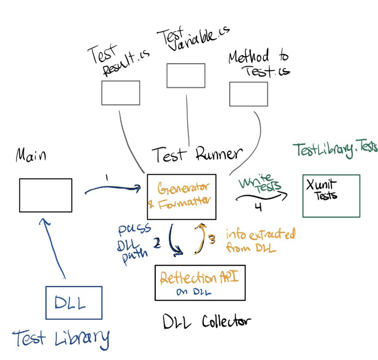
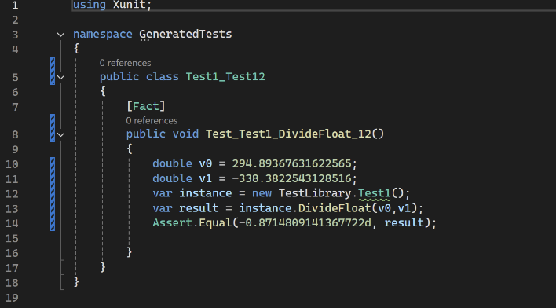
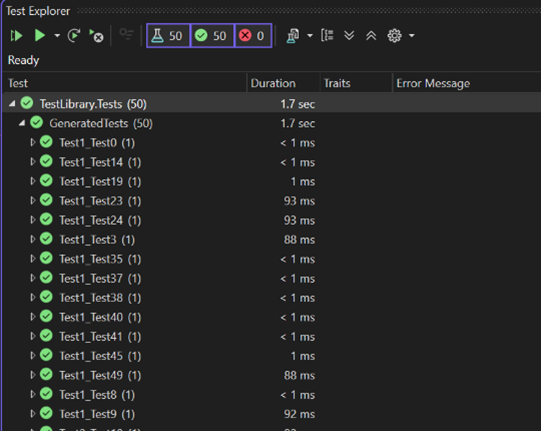

Reimplementation of Randoop for .NET
Project Summary
Programming Language: C#
Libraries/Frameworks: Reflection
Project Description
This projects goal is to reimplement the core functionality of the RandoopBare command line tool for the newer .NET ecosystem,
creating a foundation on which a more advanced plug-in tool can be built upon. Manual test creation for unit testing can be an expensive and time-consuming
task. Automated unit testing enables quick generation of reliable unit tests. Tools like Randoop reduce manual effort of the testing process by automatically
generating test cases that help uncover edge-case behavior and bugs. Randoop.NET, a powerful automatic unit test generation tool. Was originally developed
for older versions of the .NET Framework (.NET 4). The repository was last updated over 10 years ago. This open-source version uses depreciated libraries
and is not compatible with modern .NET assemblies.
Execution overview
The Main function takes the DLL you would like to generate tests on, and optionally the path you want to output the tests to, which
is set to TestLibrary.Tests by default. The DLL is passed to the Test Runner which then calls the DLL collector on it. The Test Runner then creates random
inputs from and using the information the Reflection API extracts about the DLL, creates XUnit formatted tests.
Randoop2.0 Map

The test runner creates instances with generated “dummy” arguments as required and prepares method call code by recording variable
declarations (testVariables.cs) and execution steps. The methods from (MethodToTest.cs) are then invoked, and their return value is validated as pass
or fail. (TestResult.cs) If the test passes, the runner wraps the instructions into a complete xUnit test method similar to the one shown below.
Otherwise, it records the reason for failure or skip. Our argument generation supports primitives, strings, arrays, ref/out parameters, and value
types.
Example of generated test

All the generated tests are saved in the output directory and contain asserts to ensure that the tests work well for regression testing.
The number of tests that are generated is configurable; we set the default to 50 but we left the possibility for future development to change
the value in the source code.
Generated tests
